本页仅用锚点浏览静态状态，不加载新文件、不调用 CU。真实数值来自已有 GA 样本；加载、空结果及错误页面是明确标注的设计场景，不是实际服务运行结果。
最新产品外观基线 · 2026-10-15
经公开Studio代码验证，负责人批准页级words.source常驻黄色Canvas2D层，位于结果框和交互强调之下，所有Tab保留且原图像素不改。32张Source更新、2张新增Markdown及2张单独稳定空结果完成态，共60图；24旧图含12裁图不变。511单元、178普通浏览器场景含600压力轮、4性能和32严格CSP使用方通过。普通测试零差异、不自动更新参考。
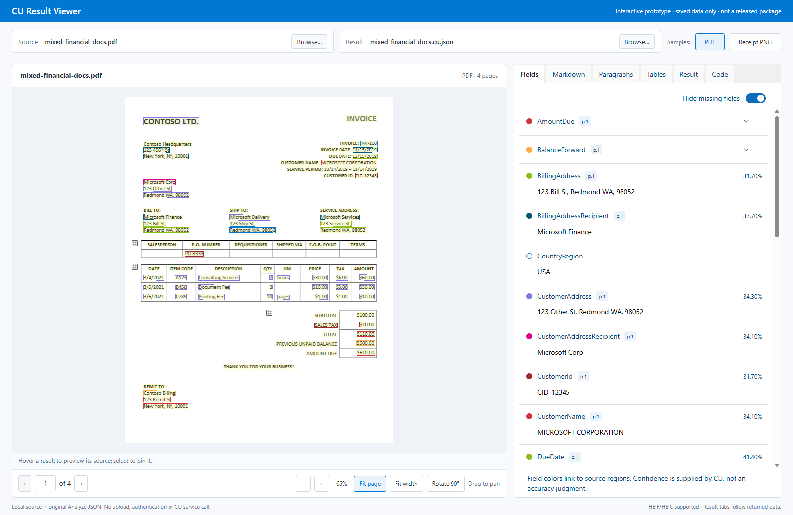
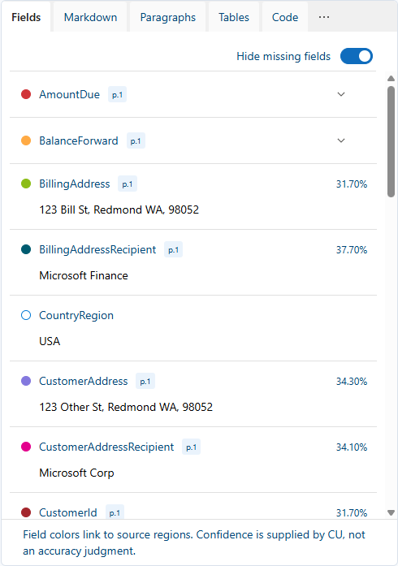
| 状态 | Chrome | Edge |
|---|---|---|
| 默认 PDF | 查看 | 查看 |
| Fields 参考 | 查看 | 查看 |
| 悬停预览 | 查看 | 查看 |
| 固定选择 | 查看 | 查看 |
| 展开字段 | 查看 | 查看 |
| 折叠但保留固定项 | 查看 | 查看 |
| 查看缺失字段 | 查看 | 查看 |
| 手动查看第 4 页 | 查看 | 查看 |
| 无定位选择 | 查看 | 查看 |
| 跨页定位 | 查看 | 查看 |
| 真实 PNG | 查看 | 查看 |
| 源文件加载 | 查看 | 查看 |
| 空结果 | 查看 | 查看 |
| 源文件错误 | 查看 | 查看 |
| 结果读取错误 | 查看 | 查看 |
| 真实 Markdown | 查看 | 查看 |
| Markdown：常驻浅黄色Word层、无字段框 | 查看 | 查看 |
| 原始 JSON 树 | 查看 | 查看 |
| 真实段落定位 | 查看 | 查看 |
| 原生表格定位 | 查看 | 查看 |
| 字段hover → 原文Value/Confidence浮层 | 查看 | 查看 |
| 段落hover → 原文Content浮层 | 查看 | 查看 |
| 左侧表格图标hover → Rows/Columns | 查看 | 查看 |
| 左侧表格图标click → 只读Table模态 | 查看 | 查看 |
| Figures · 合成定位/真实像素裁剪 | 查看 | 查看 |
| Signatures · 合成定位/真实像素裁剪 | 查看 | 查看 |
| Metadata · 合成键值 | 查看 | 查看 |
| Python SDK 示例 | 查看 | 查看 |
| C# SDK 示例 | 查看 | 查看 |
| JavaScript SDK 示例 | 查看 | 查看 |


2026-10-14负责人在补齐左图标hover/click后批准最终58张参考；Fields对照PNG及12张面板裁图不变。164普通场景通过，58张哈希未被运行改写；两浏览器均检出12px到14px圆点漂移。原始坐标/值没有改写，框线按真实CSS尺寸清晰绘制，不放宽阈值、不遮罩UI。Figures/Signatures/Metadata仍为标注的合成Preview数据；Narrator人工验收与公开发布审批单独记录。
以下图片保留为 v2 历史评审稿，不是最新 Fields 的像素验收基线。可运行版本已按后续反馈默认折叠组、隐藏未返回字段、移除 Clear 和旧固定状态栏、省略缺失置信度，并将原文预览放在文档下方；Fields 与预览置信度统一为两位小数。最新行为以原型说明及运行截图为准。
01 · 主界面：固定选择
压缩顶部宿主栏，移除主画面的说明卡。保留底部源文件控件，字段区独立滚动；固定选择有行标记和清除入口，移开鼠标后不保留悬浮提示卡。
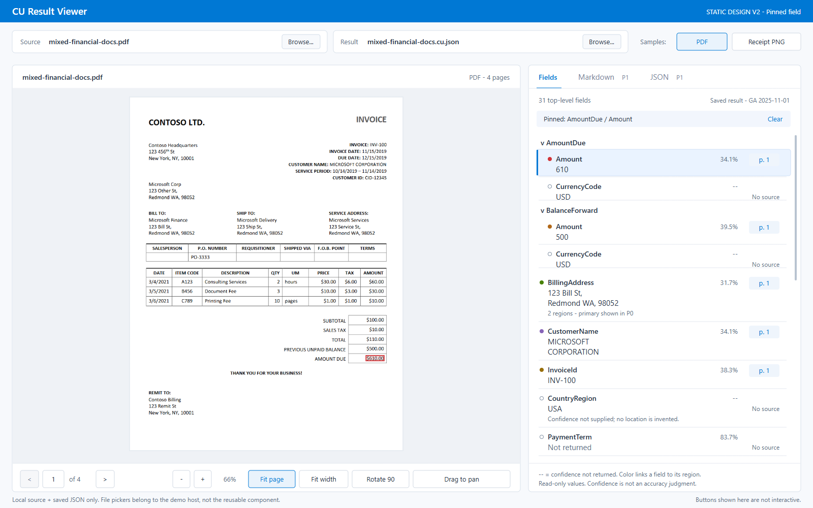
02 · 默认浏览：没有活动字段
正常阅读原文，不默认叠加全部字段色块。字段值、置信度和来源页仍可查看；明确“尚未选择”，而不是使用一个看似固定的提示卡。
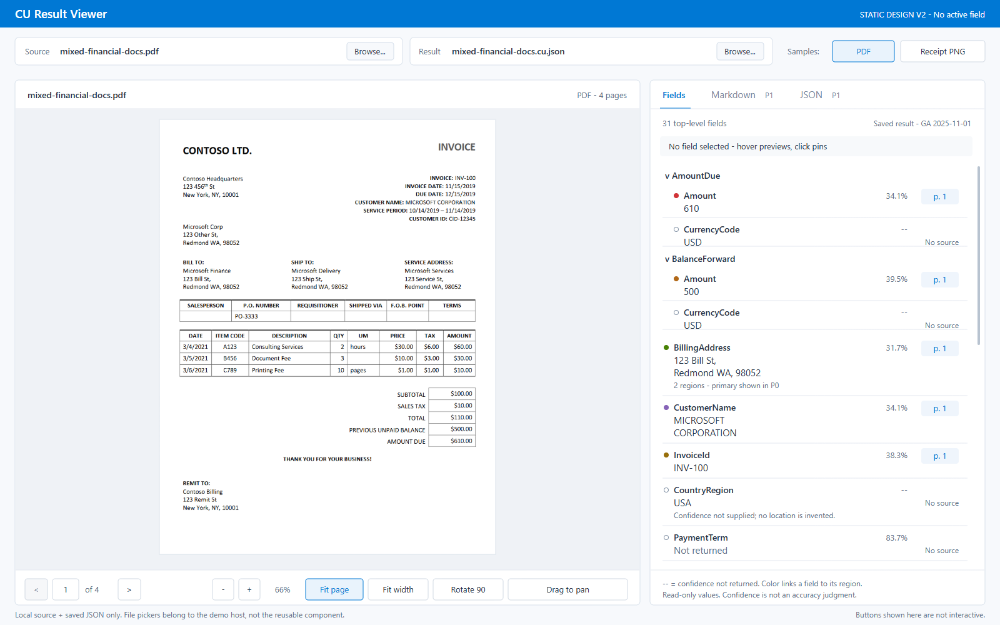
03 · 悬停：临时预览
悬停 BillingAddress 时以虚线区域、浅色行背景和临时提示卡区分预览。原有 AmountDue 固定选择仍有标识，但原文临时显示地址的主要区域；悬停结束后恢复固定高亮。
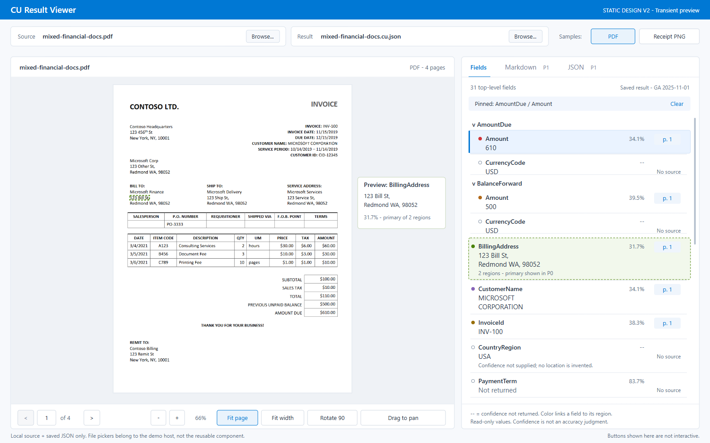
04 · 选择无定位字段
以真实 CountryRegion = USA 为例：缺失的置信度显示“--”，定位明确显示“No source”。当前第 4 页保持不变；清除旧高亮，不画一个看似属于新字段的区域。
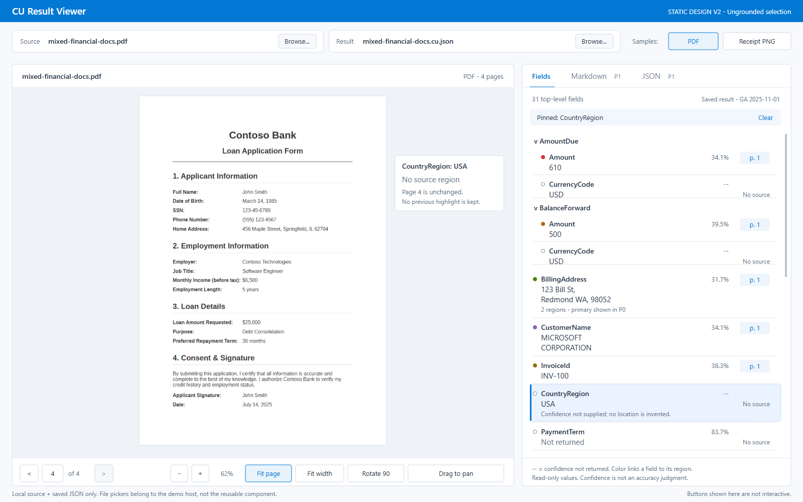
05 · 图片模式
使用真实收据 PNG 和原始字段。保留缩放、适应、旋转和平移；将无意义的翻页和跳页输入替换为单页提示。保留完整像素画布，包括透明边缘，不裁切或改变坐标系。
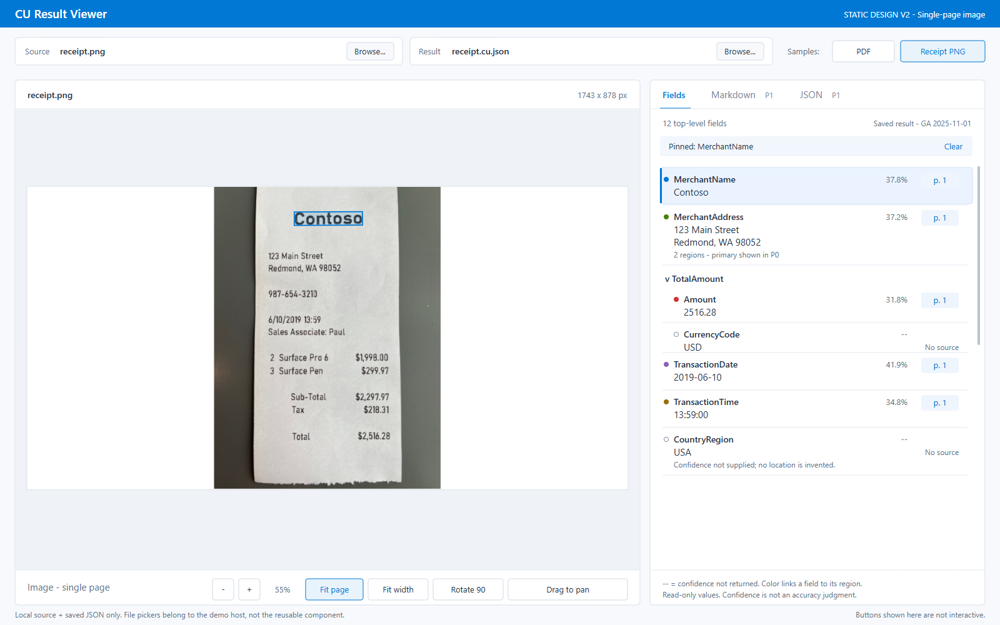
06 · 源文件加载
源文件区展示独立加载状态，不沿用上一份文档或旧高亮。已有有效结果仍可查看；源文件尚未就绪时，依赖它的控件不可操作。
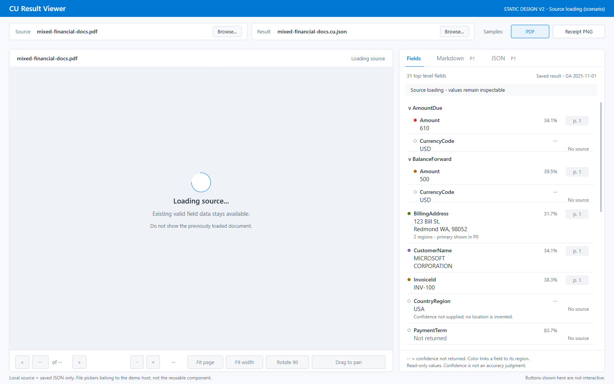
07 · 空结果
结果为空不是解析错误。右侧明确没有提取字段，左侧文档和操作条保持可用；不显示旧字段数据。
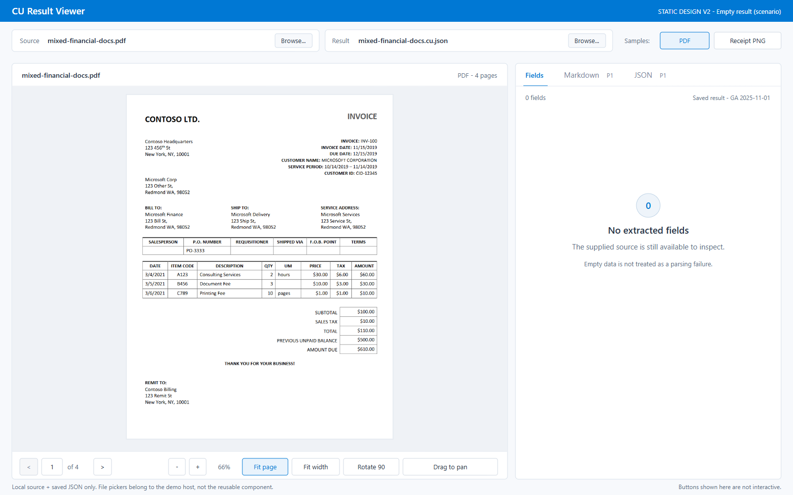
08 · JSON 读取错误
右侧显示错误由宿主 JSON 读取阶段产生，并引导在外层选择有效文件；有效源文件仍可查看。没有伪造服务错误码或行号。
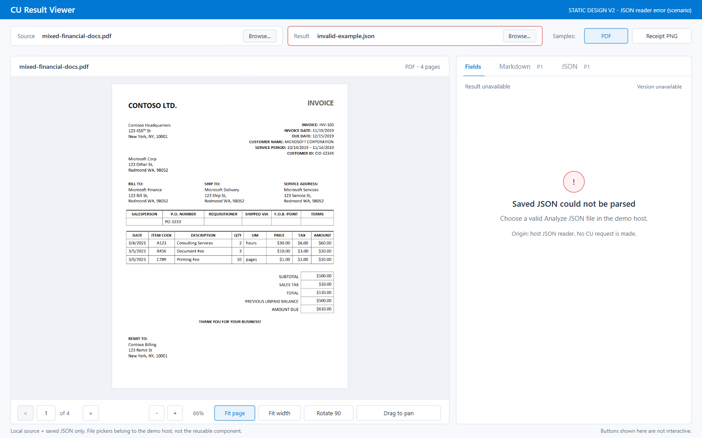
09 · 源文件显示失败
左侧明确失败，右侧真实值和可选元数据仍保留。来源页徽标不再表现为可导航，旧文档和旧高亮不可见；文件更换由宿主完成。
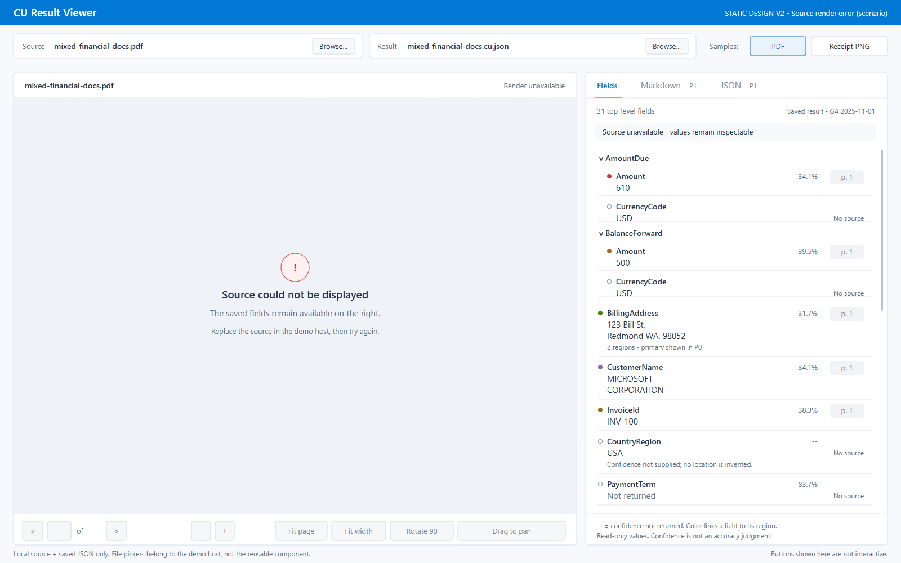
10 · 跨页查看流程
从第 4 页进入第 1 页字段预览、点击固定，再手动返回第 4 页。页面位置与字段选择分开：保留选择不等于在当前页绘制不存在的区域。
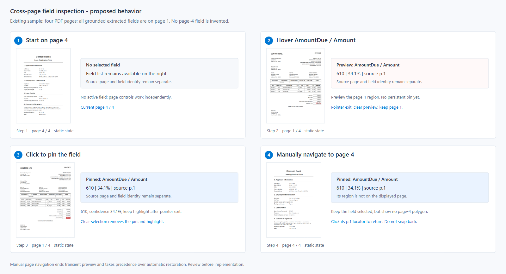